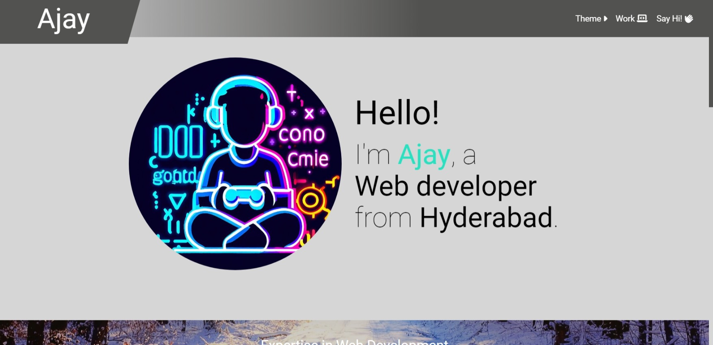
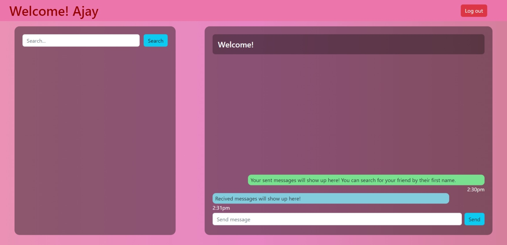
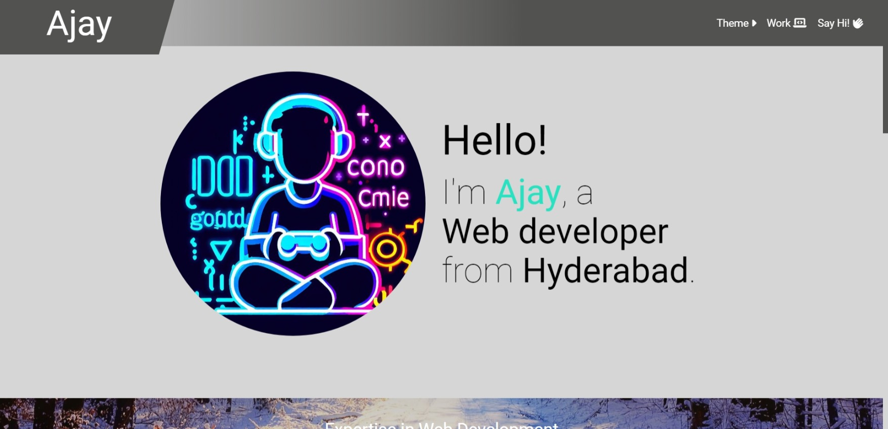
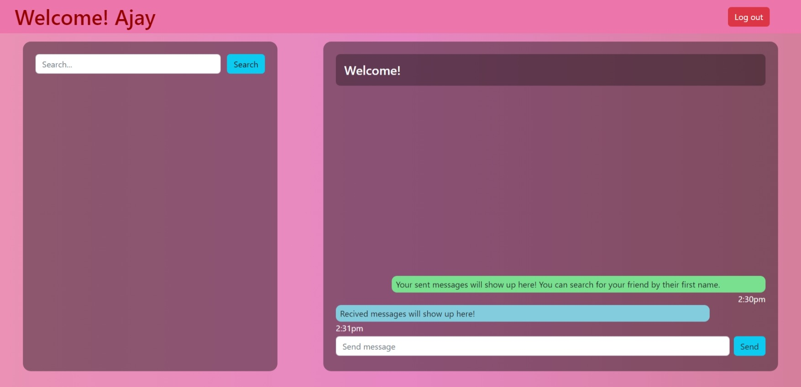

Hello!
I'm Ajay, a
Web developer
from Hyderabad.
Expertise in Web Development
Version Control
I use Git for version control, which allows me to track changes to code and collaborate with other developers. I also use GitHub to host code repositories and contribute to open source projects.

Responsive Design
As a web developer, I have expertise in creating responsive websites that look great and function well on all devices, from desktops to smartphones. I use a mobile-first design approach, fluid layouts, breakpoints, and other responsive design techniques to ensure that websites are user-friendly and accessible.
JavaScript
I have a strong foundation in JavaScript and use it to create dynamic and interactive websites. I use libraries like jQuery and frameworks like ReactJS and NextJS to build complex web applications that are easy to maintain and scale.
Backend Development
I have experience in backend development using Node.js, Express, and MongoDB. I use these technologies to create RESTful APIs, handle user authentication and authorization, also store and retrieve data from databases.
Tasks I've finished previously
With over 2 years of experience in coding and a proven track record of successfully completed projects, I possess advanced proficiency in front-end development, utilizing cutting-edge technologies such as HTML5, CSS3, Bootstrap, and Tailwind CSS. I have developed an in-depth understanding of ReactJS and NextJS, allowing me to deliver complex, high-quality web applications to clients.
Furthermore, I have a solid foundation in back-end programming languages, specifically Node.js, enabling me to build robust and scalable back-end systems to support front-end development. My extensive experience in the field has honed my problem-solving skills, attention to detail, and ability to work collaboratively with teams to achieve project goals.
Flash Chat
 



Project Details
TokoGadget
TokoGadget is a modern and visually appealing website design created using HTML, CSS, and Tailwind CSS. The website is designed to showcase the latest gadgets and technology products in a clean, minimalist, and user-friendly interface.
Flash Chat
FlashChat is a real-time group chat application that allows users to create and join chat rooms with ease. The purpose of the website is to provide a platform for users to communicate with each other instantly and without the need to create an account or sign in.